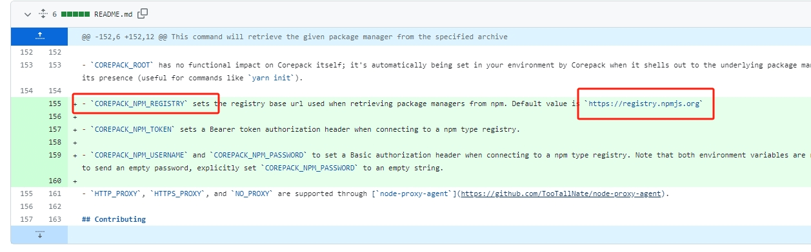

Corepack使用问题之无法访问registry.npmjs.org
起始
Corepack作为一款默认集成了pnpm npx pnpx yarn npm yarnpkg的管理工具，可在有效对nodejs相关的包管理工具进行管理，也已加入到nodejs的默认安装内容中进行分发。
作为一名折腾爱好者，对于这种集成管理工具特别亲切，能方便进行各种切换更新。
问题
于是抽空对corepack进行了体验，体验过程中遇到的第一个问题就是使用命令corepack enable后，不论是pnpm还是yarn都无法正常使用。都会出现报错，Internal Error: Error when performing the request https://registry.npmjs.org/pnpm。
1 | at ClientRequest.<anonymous> (/usr/lib/node_modules/corepack/dist/corepack.cjs:42195:20) |
看到出现registry的问题，第一反应是由于国内墙了，然后访问不了。赶忙确认~/.npmrc和~/.yarnrc是否已经配置好了。
检查后确认已经配置好，并无问题。尝试用命令pnpm config get和yarn config get来进行确认，但这两命令也会提示无法连接到https://registry.npmjs.org/pnpm。
发现
仔细观察报错日志，发现问题来自于corepack.cjs。这就又带来一个问题，为什么输入pnpm和yarn后，会是corepack报错呢？
研究后发现pnpm是调用的~/AppData/Roaming/npm/pnpm.ps1或者是~/AppData/Roaming/npm/pnpm.CMD
1 | #!/usr/bin/env pwsh |
然后pnpm.js中更简单
1 |
|
这个疑问就算解决了。那么回归正题，corepack如何设置npmmirror呢？关于这个问题我到corepack的issue列表中去查是否已有类似的问题
还真发现有人在讨论该问题，并已有人提交了PR并被合并了。
结论
通过对比不难发现，新加入了一个系统环境变量COREPACK_NPM_REGISTRY,通过这个环境变量就可以为corepack制定mirror，后续的就回到了yarn和pnpm自己的配置文件上了。

设置之后就可以正常使用pnpm和yarn了。